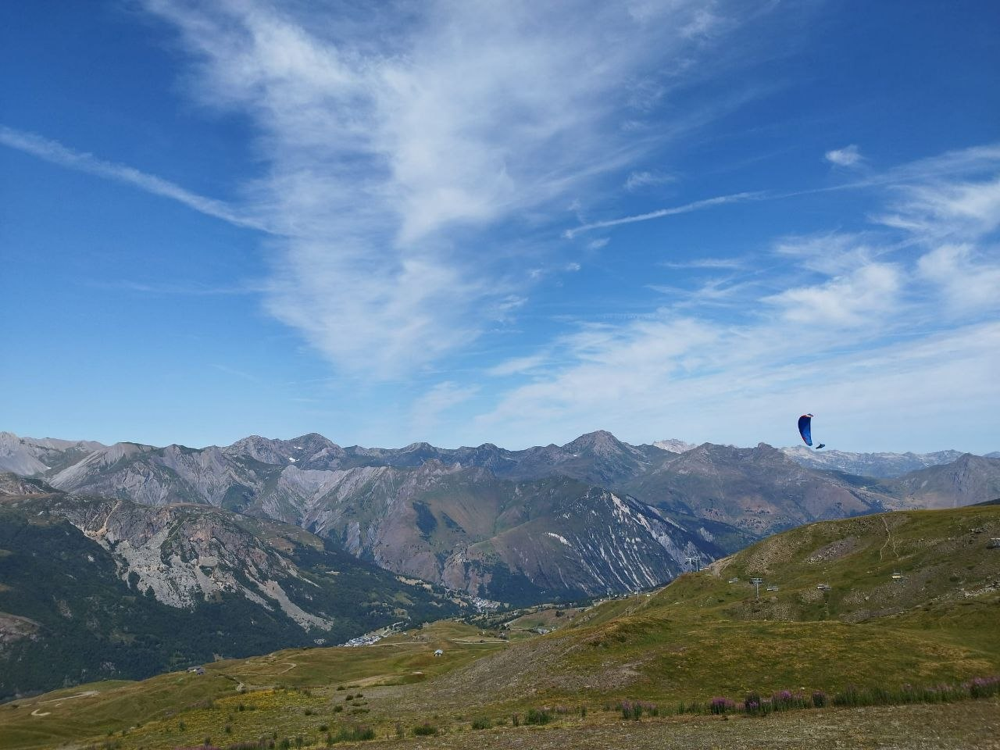

The Times They Are A-Changin'
It’s a bumper holiday issue of photo stories this month. No gallery because almost the whole newsletter is pictures. Trips abroad, comps and a Parlick ground handling session to remember during the eclipse.
Before that though, our sport is changing. We have more serious notes on the transponder mandate from the CAA and safety notes from Brian on our changing weather.
Make the most of the rest of the summer. Who knows, the late season might even bring us some mellower air to play in.
editor@penninesoaringclub.org.uk.

{kind=link}
Chairman’s Chunterings
Neil Charles, Chairman
You’ll no doubt have heard by now that the CAA wants all UK airspace users to carry ADS-B transponders.
The primary motivation for this change appears to be preparing our airspace for unmanned drones operated beyond visual line of sight (BVLOS).
While the consultation document discusses safety for all airspace users, unmanned aircraft are mentioned first and the CAA is proposing that only unmanned aircraft must be able to receive ADS-B. In other words, everyone must buy and fly with an ADS-B transponder but the Cessna flying towards you doesn’t have to have a receiver that can detect it - only drones do. In terms of collision avoidance, the mandate doesn’t seem to do much at all for existing airspace users.
“One of its aims is to support the safe introduction of new types of aviation, including BVLOS operations and eVTOL. Another aim is to protect access for existing airspace users, including private pilots, glider and balloon operators, pilot training organisations, commercial and specialised aviation, military users, and emergency services.”
There is a small, battery-powered ADS-B device that could be carried by paragliders - the Sky Echo 2 - but it costs £650 and is really designed to be stuck to the window of a light aircraft.
The consultation closes on the 22nd September. We will discuss our points of view as a committee and respond as a club but we’re waiting for the BHPA’s suggestions first, so that we can coordinate our answers.
Objections are likely to cover the disproportionate expense of ABS-B compared with the cost of paragliders and hang gliders, whether the device is technically suitable for aircraft without a cockpit structure, working solutions already being in place (FLARM), the different approaches being taken internationally, and the fairness of who will pay compared to who will benefit.
Watch this space. We’ll do our best to make ourselves heard.
Neil
Safety Notes
Brian Stewart, Safety Officer
A couple of weeks ago I took Tony Colombat’s remains up to Parlick to give him his last flight and scatter his ashes. It could have gone badly wrong as I launched with my speed bar line wrapped tightly around my camera mount on my right carabiner, and it only came loose after the camera mount snapped.
Learning Points
- Distraction #1. I was maybe too focused on a successful scattering so paid less attention to pre-flight checks.
- Distraction #2. I was so impressed with my near perfect cobra launch that I didn’t spot the tangle.
- Haste. The wind was forecast to increase, and it was already picking up so time was of the essence.
The wing remained flyable and I made a few abortive attempts to top land and sort it, but the wind was already too strong for that. Fortunately, the mount broke at that point so all was well. I’ve written before about lines getting caught; I’ve given up on mounting a camera anywhere – I have never been a fan of helmet mounts and kidded myself that my carabiner mount was safer. Remember: if it can tangle, it will.
Are we getting more Dusties?
Strong solar heating of the ground, light ambient winds, and a highly unstable lower atmosphere are the primary conditions that lead to the formation of dust devils on paragliding sites in the UK. Here’s what AI (Gemini) has to say about them:
While the UK’s temperate climate makes them less frequent than in desert regions, thermic paragliding sites—especially those with dry, bare earth or harvested fields—can experience intense, localized dust devils during peak summer months.
Core Meteorological Conditions
- Intense Solar Radiation: Strong, uninterrupted sunshine acts as the primary trigger. It rapidly heats dark or dry ground surfaces, which in turn heats the thin layer of air directly above it. [1]
- Highly Unstable Lower Atmosphere: A steep temperature drop with altitude (lapse rate) must exist near the ground. The superheated air at the surface becomes significantly less dense than the cooler air above it, forcing it to rise rapidly.
- Light Ambient Winds: Background winds generally need to be under 10 knots (approx. 11 mph). Strong winds or heavy turbulence will shear and destroy the delicate thermal column before a organized rotation can develop.
- Localized Wind Shear: As the hot air rushes upward, surrounding air flows inward to replace it. If this incoming air hits a minor obstacle or enters from slightly different angles, it initiates a spinning motion, creating the vortex. [1, 2, 3] Paragliding Site Topography & Surface Triggers The specific nature of paragliding launches, landing zones, and surrounding UK terrain heavily influences their creation: [1]
- Bare Ground and Takeoff Areas: Many popular UK hillsides feature exposed rock, gravel paths, worn take-off patches, or parched summer grass. These surfaces absorb heat much faster than surrounding lush vegetation, acting as prime thermal triggers.
- Harvested Fields and Lowlands: Landing zones (LZs) situated in flat valley floors next to freshly cut silage or harvested wheat fields are notorious. The dry, dark soil exposed after a harvest absorbs massive amounts of solar energy.
- Bowl Topography and Sun Traps: South- or southwest-facing hill bowls trap heat throughout the morning. If the air in these bowls remains stagnant, it can suddenly release violently as a dust devil once a critical temperature threshold is reached. [1] Hazards for Paraglider Pilots Dust devils pose a severe danger to paragliders because their core rotation is often completely invisible until they pick up dust, hay, or loose debris. [1]
- Launch and Landing Vulnerability: If a vortex sweeps through a launch or landing area, it can instantaneously deflate a canopy, spin a pilot into the ground, or lift an unclipped wing or pilot unexpectedly into the air. [1]
- Thermal Turbulence: Encountering a dust devil mid-flight can lead to massive, asymmetric wing collapses, rapid unmanageable rotation, and a sudden, severe loss of altitude.
Remember: Dusties only become dusty when there’s dust, they may be invisible.
Airspace
The General Aviation Community will be hosting a webinar on the CAA’s consultation on a Proposed Electronic Conspicuity Mandate in the UK. (finished now but the video will be made available - Ed).
It isn’t an opportunity to participate or offer responses but is intended to guide responses to the consultation. This is an issue which could have a profound effect on our sport in the future, so it is worth your while at least understanding of which way the CAA are leaning.
We really need someone to take on the role of watching the developments here – I field the emails that come in from various groups, but lacking a degree in gobbledygook, I’m not up to dealing with responding in any depth, If you have an eye for detail, possibly a legal background or experience in commercial or general aviation, please consider putting yourself forward.
Sites Updates
Andy Archer, Sites Officer
The BP Cup is Coming to Parlick
Don’t forget the second round of the BP cup will be held at Parlick on the August Bank Holiday, Friday 27th to Monday 31st August.
Parlick During the Eclipse
Matt Baird
{kind=link}
{kind=link}
{kind=link}
{kind=link}
{kind=link}
{kind=link}
{kind=link}
{kind=link}
Emma Wrathall at the Niviuk Wide Open in Macedonia
First comp! Had a great time in Macedonia with some awesome pilots. Learnt so much.
PB XC! Launched with 90 others and flew with the gaggle.
Scary, but as the week went on, I became so much more confident. Flying tasks really does push you as a pilot!
NWO is a fantastic learning environment, and I’d recommend pilots to get involved.
{kind=link}
{kind=link}
{kind=link}
{kind=link}
John Flood’s Adventures in Annecy and St Helier
{kind=link}
{kind=link}
John Oliver at the Lakes Charity Classic
{kind=link}
{kind=link}
{kind=link}
{kind=link}
{kind=link}
{kind=link}
{kind=link}
{kind=link}
Competitions
Elliott Brown, Competitions Secretary
XContest
XC League
NCS - Northern Challenge Series 2026
Social Media
Barry’s doing a great job of showing what we’re up to on our Instagram account. Make sure you’ve followed and tag Pennine Soaring Club into your posts so we can reshare your adventures.
You Might Have Missed
If Brian’s words about dusties didn’t give you pause for thought, this is Greenwich Park in London last Sunday.
Dates For Your Diary
22nd - 29th August - Sports Class Racing Series Spanish Edition - Piedrahita, Spain
27th - 31st August - BP Cup Round 2 - Parlick
4th - 11th September - British & Dutch Open Championships - Pedro Bernardo, Spain
5th - 12th September - Paragliding World Cup Siatista - Siatista, Greece
13th - 19th September - British & Irish Sports Trophy - St Andre, France
18th - 20th September - BAC Round 4/Super Final - Woldingham, Surrey
7th - 14th November - Sports Class Racing Series Mexican Edition - Tapalpa, Mexico
Your Newsletter Needs You
Appear in the next newsletter! We need submissions for…
A Grand Day Out
2-3 paragraphs describing a fun day. You’re welcome to write more if you’re feeling creative but a couple of paragraphs is plenty. Could be epic, could be daft, could be simply the first time you flew for six months. If you’ve had a good day and you took some pictures, send it in.
Why Not Visit…
A quick guide to a site that you like, at home or abroad. Tell us where it is, what it’s like to fly, any watch-outs and how to contact the locals. Attach a photo and email it over.
The Gallery
Send in any recent(ish) shots with when and where they were taken. Spectacular, silly, from the ground or from the air, it doesn’t matter. Let’s see what you’ve been up to. Videos are very welcome too but pop them on YouTube or Vimeo and send a link for the newsletter.
Shout Outs
First ever XC? Smashed a PB? Took part in a comp? Let us know and get a shout out in the newsletter. Nominate your mates if they won’t do it themselves.
Top Tips
Spotted a bargain? Got a great travel tip? Know how to make Bluetooth connections work on an iPhone? Share your best ideas.
Send submissions on these or anything else you’d like to see featured to editor@penninesoaringclub.org.uk. You can also drop them over using the web form or message Neil on Telegram.
Fly safe
editor@penninesoaringclub.org.uk.